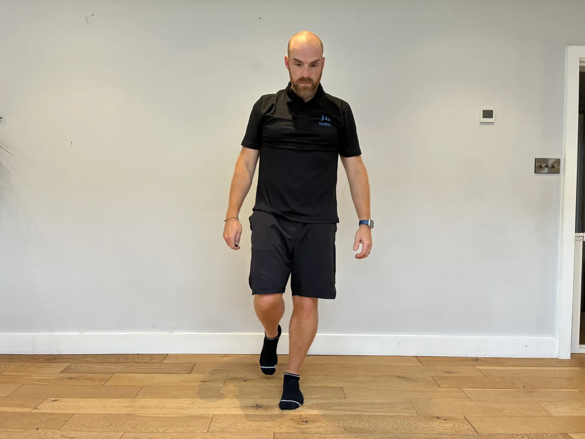
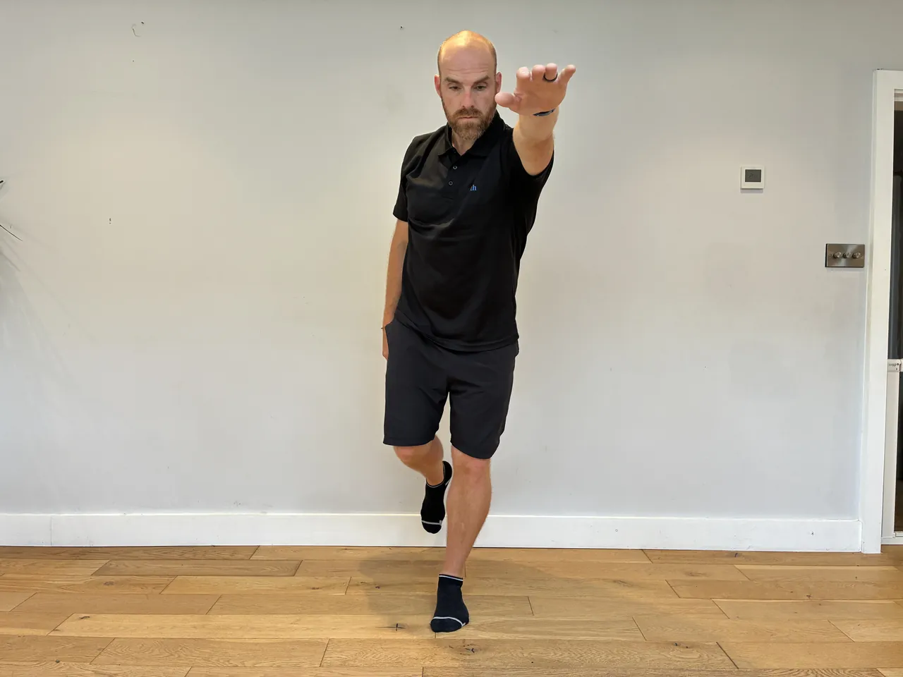
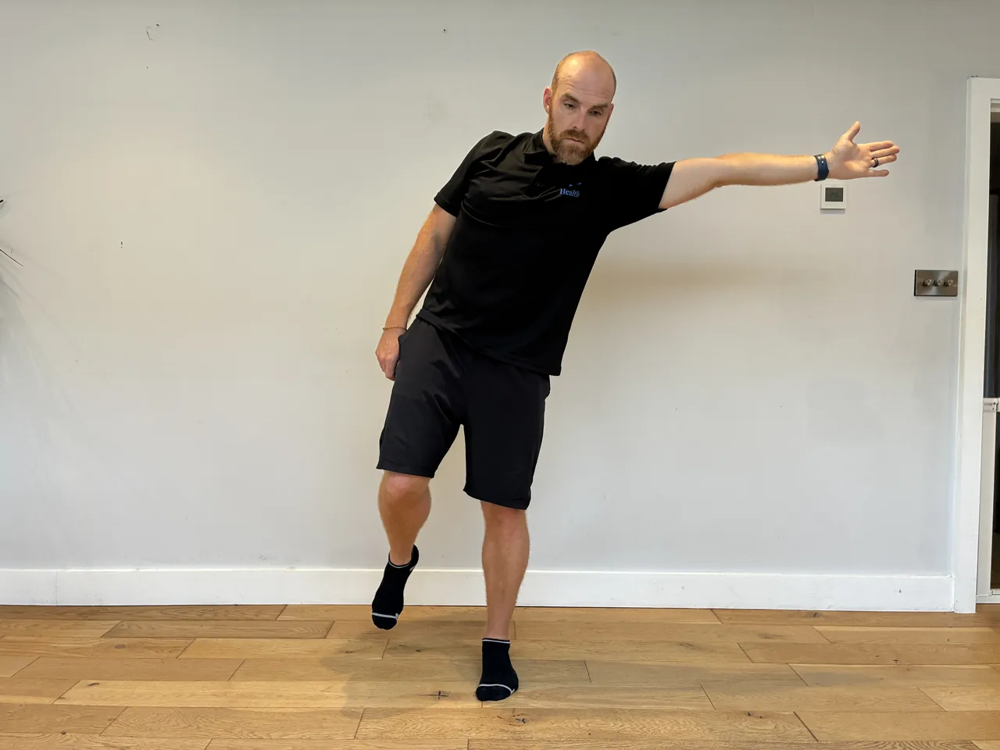
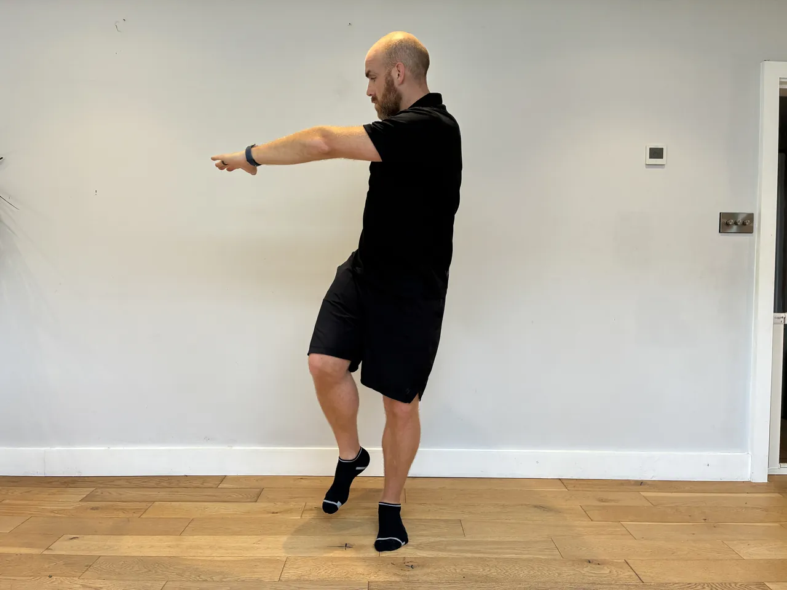

Start: Stand in front of a box at about knee height holding a light weight at the chest, feet hip to shoulder-width, toes slightly out.
Movement: Sit the hips back and down to lightly touch the box, then stand tall through the heels, keeping the weight at the chest.
Focus: Keep the knees tracking over the toes and the chest up. Sit back under control rather than dropping onto the box, and drive up through the heels.
Start: Face away from a low cable, rope passed between the legs, feet shoulder-width, a soft bend in the knees. Step out to load the cable.
Movement: Hinge the hips back with a flat back until you feel the hamstrings, then push the hips forward to stand and squeeze the glutes at the top.
Focus: It is a hip hinge, not a squat or a pull with the arms. Keep the back flat and let the hips do the work. Don't lean back at the top.
Start: Sit at the machine with a close neutral-grip handle, thighs secured, arms extended, chest up.
Movement: Pull the handle to the upper chest, driving the elbows down close to the body, then return slowly under control.
Focus: Lead with the elbows and draw the shoulder blades down and back, not shrugging. Keep the chest up and the torso still, and control the return.
Start: Hold the end of a landmine bar at one shoulder, standing tall or half kneeling, ribs down, core braced.
Movement: Press the bar up and slightly forward along its arc until the arm is straight, then lower back to the shoulder under control.
Focus: Keep the ribs down and the core braced so the lower back doesn't arch. Keep the shoulder down away from the ear, and follow the bar's arc rather than forcing it straight up.
Start: Sit on the floor with the working leg straight out in front. Loop a resistance band around the ball of the foot and anchor the other end on something solid ahead of you, or hold it with both hands, so the band pulls the foot away from you.
Movement: Pull the toes and the front of the foot back towards the shin against the band, then let the band draw the foot slowly back out under control.
Focus: The front of the shin should be doing all the work, so keep the knee still and move only at the ankle. The slow return matters as much as the pull. Do each foot on its own so a weaker side cannot hide, and start with a light band, since this muscle tires fast. Loaded progression from anterior tibialis toe raises: once bodyweight raises are easy, this is where the strength comes from.


Start: Stand tall, balls of the feet on the floor or a step edge, holding a support for balance.
Movement: Rise up onto the toes, then lower the heels slowly over three to four seconds under control.
Focus: Rise smoothly and control the slow lower, feeling the calf lengthen, not dropping. Keep the ankles tracking straight, and stay in a comfortable range.




Start: Stand on one leg, torso tall, other foot lifted, arms ready to reach.
Movement: Reach the arms (and torso if set) out to the sides or forward, challenging balance, then return to centre.
Focus: Keep the hips level and the standing knee soft as you reach, moving slowly. Fix the eyes on a point, keep the core engaged, and return under control.
Start: Stand side-on to a low cable with a cuff on the outer ankle, holding a support, torso tall.
Movement: Take the working leg out to the side against the cable, keeping it straight, then return under control.
Focus: Keep the leg straight and the hips level, not leaning to lift. Keep the torso tall, control the return, and feel the outer hip work.
Start: Lie on your back holding a band or light weight up over the chest, knees bent over the hips, back pressed into the floor.
Movement: Lower the opposite arm and leg slowly while holding the resistance steady above you, keeping the back flat, then swap.
Focus: Keep the lower back pressed to the floor throughout, and the resistance held still and steady. Move slowly, and reduce the reach if the back begins to arch.
Start: Stand in front of a box at about knee height holding a light weight at the chest, feet hip to shoulder-width, toes slightly out.
Movement: Sit the hips back and down to lightly touch the box, then stand tall through the heels, keeping the weight at the chest.
Focus: Keep the knees tracking over the toes and the chest up. Sit back under control rather than dropping onto the box, and drive up through the heels.
Start: Stand tall with a barbell held at the front of your thighs, hands just outside your legs, feet hip-width. Set the shoulders back, brace the core hard, and keep a soft bend in the knees.
Movement: Push the hips back and slide the bar down the front of your legs, keeping it in contact, until you feel a strong stretch in the hamstrings. Keep the knees still and the shins vertical. Drive the hips forward to stand tall and finish with the glutes.
Focus: The back stays flat from start to finish, never rounded. This is a hip hinge, not a squat, so the movement happens at the hips while the bar tracks close to the legs. Only lower as far as you can hold a flat back, and don't lean back or over-arch at the top.
Start: Sit at the machine, thighs under the pads, hands on the bar wider than shoulders, arms extended up, chest up.
Movement: Pull the bar down towards the upper chest by driving the elbows down, then return it up slowly under control.
Focus: Lead with the elbows and squeeze the shoulder blades down, not shrugging up. Keep the chest up and avoid leaning back to heave the bar, and control the return.
Start: Sit tall on a bench with back support, a dumbbell in each hand at shoulder height, elbows under the wrists, ribs down.
Movement: Press the dumbbells overhead until the arms are straight, then lower them back to shoulder height under control.
Focus: Keep the ribs down and the back against the support, not arching to press. Keep the shoulders down away from the ears, and lower under control to a comfortable shoulder range.
Start: Sit in the leg press, balls of the feet on the bottom edge of the platform, heels off, legs almost straight but not locked.
Movement: Press through the balls of the feet to push the platform away, then lower the heels slowly for a full calf stretch.
Focus: Move only at the ankles, keeping the knees still and soft. Push up to a full contraction and lower slowly, and keep the safety catches set in case the feet slip.
Start: Sit on the floor with the working leg straight out in front. Loop a resistance band around the ball of the foot and anchor the other end on something solid ahead of you, or hold it with both hands, so the band pulls the foot away from you.
Movement: Pull the toes and the front of the foot back towards the shin against the band, then let the band draw the foot slowly back out under control.
Focus: The front of the shin should be doing all the work, so keep the knee still and move only at the ankle. The slow return matters as much as the pull. Do each foot on its own so a weaker side cannot hide, and start with a light band, since this muscle tires fast. Loaded progression from anterior tibialis toe raises: once bodyweight raises are easy, this is where the strength comes from.
Start: Stand on a balance board on one foot, knee soft, torso tall, near a support.
Movement: Keep the board level and steady on one leg, making constant small adjustments, for the set time.
Focus: Keep the standing knee soft and the hips level, adjusting from the ankle. Fix the eyes on a point, keep the core engaged, and keep support within reach.
Start: Lie on your back, arms overhead, legs straight, lower back pressed firmly into the floor.
Movement: Lift the shoulders and legs a little off the floor into a shallow dish shape and hold, keeping the back flat.
Focus: Keep the lower back pressed to the floor, never letting it arch up, this protects the spine. Raise the limbs only as high as you can hold that flat back, lowering them if it lifts.
Start: Hold a side plank, top arm reaching towards the ceiling, body in a straight line.
Movement: Reach the top arm under and through the gap beneath your body, rotating the upper back, then return to the open position.
Focus: Keep the hips lifted and level as you rotate, letting the twist come from the upper back, not the lower spine. Keep the shoulder stacked and don't let the hips sag through the reach.
Start: Sit in the leg press, feet flat and hip to shoulder-width, hips and back into the pad, core braced.
Movement: Lower under control to a comfortable bend, pause for two seconds holding still, then press back up through the whole foot.
Focus: Keep the knees tracking over the toes through the pause and the hips flat on the pad. Hold only at a depth the knees tolerate, and press up smoothly without slamming the knees straight.
Start: Sit on the floor with your upper back against a bench, a padded barbell across the front of your hips. Feet flat, hip-width, shins vertical when the hips are up. Tuck the chin slightly and brace the core.
Movement: Drive through your heels and push the hips up until the thighs are level and the body makes a straight line from knees to shoulders. Squeeze the glutes hard at the top, hold, then lower with control.
Focus: Finish the lift with the glutes at a straight line, don't over-arch the lower back to gain height. Keep the ribs down and the chin tucked so the movement stays in the hips, not the back. Shins stay roughly vertical at the top.
Start: Stand side-on to a landmine bar, hinge with a flat back, one hand on the bar end, core braced.
Movement: Pull the bar towards the hip, driving the elbow back and up, then lower under control.
Focus: Keep the back flat and the hips still, leading with the elbow and squeezing the shoulder blade. Don't round or twist the torso to lift, and control the lower.
Start: Lie on a bench, a dumbbell in each hand at chest height, elbows a little below shoulder line, shoulder blades set back, feet planted.
Movement: Press the dumbbells up until the arms are nearly straight, then lower under control to a comfortable stretch.
Focus: Keep the shoulder blades set back on the bench and the elbows tucked to about 45 degrees, not flared wide, to protect the shoulders. Control the lower rather than dropping.
Start: Lie on your back, knees bent, feet flat, hands lightly behind the head or across the chest, ribs down.
Movement: Curl the head and shoulders up off the floor by rounding the upper back, then lower under control.
Focus: Curl from the abdominals and keep the neck neutral, not pulling the chin to the chest. Keep the lower back settled, and control the lower rather than dropping.
Start: Lie on your back, knees bent up over the hips, hands by the sides or under the lower back, ribs down.
Movement: Curl the knees towards the chest by lifting the hips slightly off the floor, then lower under control.
Focus: Curl using the lower abdomen to lift the hips, not swinging the legs. Keep the movement small and controlled, and don't let the lower back arch as you lower.
Start: Stand with the back against a wall or sit tall, heels down, toes free to lift.
Movement: Raise the toes and fronts of the feet up towards the shins, then lower under control.
Focus: Move only at the ankles, raising the toes as high as you can, and control the lower. Keep it slow and deliberate, feeling the front of the shin work.
Start: Stand tall, feet hip-width, balls of the feet on the floor or the edge of a step, holding a support for balance.
Movement: Rise up onto the toes as high as you comfortably can, then lower the heels slowly under control.
Focus: Rise and lower slowly and evenly, not bouncing, through the full comfortable range. Keep the ankles tracking straight, not rolling out, and control the lower.
Start: Stand on a balance board on one foot, knee soft, torso tall, near a support.
Movement: Keep the board level and steady on one leg, making constant small adjustments, for the set time.
Focus: Keep the standing knee soft and the hips level, adjusting from the ankle. Fix the eyes on a point, keep the core engaged, and keep support within reach.
Start: Hold a side plank, body in a straight line, shoulder over the elbow.
Movement: Lower the hips slowly towards the floor a short way, then lift back up to the straight line, controlled, for the set reps.
Focus: Control the dip and the lift with the side waist, keeping the body in line front to back. Don't let the hips sag at the bottom or the torso rotate, and keep the shoulder stacked.
Start: Set a box behind you at about parallel height. Bar on the upper back, feet shoulder-width or wider, toes out, braced hard.
Movement: Sit the hips back and down to lightly touch the box under control, then drive up through the heels to stand tall. Don't relax fully onto the box.
Focus: Keep the knees tracking over the toes and the shins fairly upright as you sit back. Touch the box under control rather than dropping, and keep the back flat and core braced throughout.
Start: Stand tall with a barbell held at the front of your thighs, hands just outside your legs, feet hip-width. Set the shoulders back, brace the core hard, and keep a soft bend in the knees.
Movement: Push the hips back and slide the bar down the front of your legs, keeping it in contact, until you feel a strong stretch in the hamstrings. Keep the knees still and the shins vertical. Drive the hips forward to stand tall and finish with the glutes.
Focus: The back stays flat from start to finish, never rounded. This is a hip hinge, not a squat, so the movement happens at the hips while the bar tracks close to the legs. Only lower as far as you can hold a flat back, and don't lean back or over-arch at the top.
Start: Stand wide, holding the ViPR horizontally in both hands at chest height, knees soft, core braced.
Movement: Shift into one hip, bending that knee while the other leg straightens, then push back across to the other side. Keep the tool moving smoothly with the body.
Focus: Shift your weight side to side into each hip, letting the ViPR travel with you, keeping the trunk tall over the loaded leg. Sink into the hip rather than collapsing at the waist, and keep both feet planted.
Start: Stand tall with a weight in one hand at your side like a suitcase, feet hip-width, ribs down, core braced, with space ahead to walk into.
Movement: Step forward into a lunge, lowering until both knees bend towards right angles, then drive through the front heel and bring the back foot through into the next lunge, holding the weight steady at your side throughout. Load one side for the set, then swap.
Focus: Resist the pull towards the weighted side, keeping the shoulders and hips level and the torso tall. Keep the front knee over the ankle, brace hard so you don't lean, and step under control.
Start: Stand with the back against a wall or sit tall, heels down, toes free to lift.
Movement: Raise the toes and fronts of the feet up towards the shins, then lower under control.
Focus: Move only at the ankles, raising the toes as high as you can, and control the lower. Keep it slow and deliberate, feeling the front of the shin work.
Start: Stand on one foot, the ball of the foot on the floor or a step edge, holding a support for balance.
Movement: Rise up onto the toes as high as you comfortably can, then lower the heel slowly under control.
Focus: Rise and lower slowly and evenly, not bouncing, through the full comfortable range. Keep the ankle tracking straight, not rolling out, and control the lower.
Start: Lie on your back, one knee bent with the foot flat, the other leg extended straight out and held off the floor.
Movement: Drive through the heel of the bent leg to push your hips up until the body is level. Hold two seconds, then lower slowly under control.
Focus: Keep the hips level, don't let the free side drop or twist. Push with the glute, not the lower back, and keep the ribs down.
Start: On all fours, a light weight in one hand or a cuff on the wrist, back flat and neutral, core braced.
Movement: Reach the weighted arm and the opposite leg out level with the body, hold briefly, then return and repeat, swapping as set.
Focus: Keep the hips and shoulders square and the back flat, resisting the twist the added weight encourages. Move slowly, and keep the reach to where the neutral spine holds.
Start: Take a wide stance, toes out, bar over mid-foot. Sit the hips back and down to grip inside the legs, arms straight, chest up, flat back, shoulders over the bar.
Movement: Drive through the legs and push the knees out, standing the bar up close to the body until the hips lock out tall. Push the hips back to lower along the same line under control.
Focus: Keep the chest up and the back flat, never rounded. Drive the knees out over the toes and take the effort in the legs and hips. Keep the bar close and don't lean back at the top.
Start: Sit on the floor with your upper back against a bench, a padded barbell across the front of your hips. Feet flat, hip-width, shins vertical when the hips are up. Tuck the chin slightly and brace the core.
Movement: Drive through your heels and push the hips up until the thighs are level and the body makes a straight line from knees to shoulders. Squeeze the glutes hard at the top, hold, then lower with control.
Focus: Finish the lift with the glutes at a straight line, don't over-arch the lower back to gain height. Keep the ribs down and the chin tucked so the movement stays in the hips, not the back. Shins stay roughly vertical at the top.
Start: Lie on an incline bench, feet planted, shoulder blades pinched back and down, grip a little wider than shoulders, unrack over the upper chest.
Movement: Lower the bar under control to the upper chest, elbows tucked to about 45 degrees, then press back up to straight arms.
Focus: Keep the shoulder blades set back and down and the elbows tucked, not flared, to protect the shoulders. Keep the feet planted, lower under control, and don't bounce the bar.
Start: Hinge forward with a flat back holding a barbell overhand at arms' length, chest up, hips back, core braced.
Movement: Pull the bar towards the upper abdomen, driving the elbows back and out, then lower under control.
Focus: Keep the back flat and the hinge steady, not rounding or rising. Lead with the elbows, squeeze the shoulder blades, and keep the shoulders down.
Start: Rest a barbell across the upper back, feet hip-width, torso tall, core braced.
Movement: Step one foot forward into a lunge, lowering until both knees are bent towards right angles, then drive through the front heel to return to standing.
Focus: Keep the front knee over the ankle, not caving in, and the torso tall with the core braced. Control the descent and drive up through the front heel, keeping the hips level.
Start: Stand on one foot, the ball of the foot on the floor or a step edge, holding a support for balance.
Movement: Rise up onto the toes as high as you comfortably can, then lower the heel slowly under control.
Focus: Rise and lower slowly and evenly, not bouncing, through the full comfortable range. Keep the ankle tracking straight, not rolling out, and control the lower.
Start: On all fours, hands under shoulders, knees under hips, back flat and neutral, core braced.
Movement: Reach the opposite arm and leg out straight until level with the body, hold briefly, then return under control and swap.
Focus: Keep the hips and shoulders square to the floor and the back flat, resisting any twist or sag as the limbs extend. Move slowly, and reach only as far as you keep the neutral spine.
Start: Lie on your back, legs straight, arms overhead, ribs down.
Movement: Lift the torso and legs together to meet in a V, reaching towards the feet, then lower under control.
Focus: Lift from the core and keep the neck neutral, not straining the head forward. Lower under control without the back arching, and reduce the range if the back complains.
Start: Stand on a balance board, knees soft, torso tall, ready for small nudges or self-generated wobbles, near a support.
Movement: Keep the board steady while introducing or absorbing small perturbations, recovering balance each time.
Focus: React from the ankles and keep the knees soft and hips level, recovering smoothly. Stay tall, keep the core engaged, and keep support within reach.
Start: Stand with the back against a wall or sit tall, heels down, toes free to lift.
Movement: Raise the toes and fronts of the feet up towards the shins, then lower under control.
Focus: Move only at the ankles, raising the toes as high as you can, and control the lower. Keep it slow and deliberate, feeling the front of the shin work.
Start: Bar on the upper back, feet shoulder-width, toes slightly out, core braced hard, standing tall after unracking.
Movement: Sit down to a comfortable depth, pause for two to three seconds holding still, then drive up through the heels to stand.
Focus: Keep the knees tracking over the toes and the heels down through the pause. Keep the chest up and the core braced so the back stays flat, and pause only at a depth you control.
Start: Stand with feet hip-width, the bar over mid-foot. Hinge down to grip just outside your legs, shins to the bar, chest up, back flat, shoulders slightly ahead of the bar, core braced hard.
Movement: Push the floor away and stand tall, keeping the bar dragging close to your legs, hips and shoulders rising together. Finish standing tall with the glutes, then hinge the hips back and lower the bar under control down the same line.
Focus: The back stays flat from floor to lockout, never rounded. Take the load through the legs and hips and keep the bar close to the body throughout. Don't jerk the bar or lean back at the top, just stand tall.
Start: Lie on a bench, a dumbbell in one hand at chest height, the other arm out for balance, shoulder blades set, core braced.
Movement: Press the dumbbell up until the arm is nearly straight, then lower under control to a comfortable stretch.
Focus: Keep the shoulder blades set and resist the torso twisting towards the free side. Keep the elbow at about 45 degrees, not flared, and control the lower.
Start: Hinge forward with a flat back holding a barbell at arms' length, chest up, core braced, hips back.
Movement: Pull the bar towards the hips, driving the elbows back, then lower under control while holding the hinge.
Focus: Keep the back flat and the hinge steady throughout, not rising or rounding as you row. Lead with the elbows, squeeze the shoulder blades, and keep the shoulders down.
Start: Barbell across the upper back, stand a stride in front of a bench with the back foot resting on it, torso tall, core braced.
Movement: Lower by bending the front knee until the thigh is towards parallel, then drive up through the front heel to the start.
Focus: Keep the front knee tracking over the foot, not caving in, and the weight through the front leg with the core braced. Keep the torso tall, control the descent, and go only as deep as the knee stays comfortable.
Start: Lie on your back, knees bent up over the hips, hands by the sides or under the lower back, ribs down.
Movement: Curl the knees towards the chest by lifting the hips slightly off the floor, then lower under control.
Focus: Curl using the lower abdomen to lift the hips, not swinging the legs. Keep the movement small and controlled, and don't let the lower back arch as you lower.
Start: Lie on your back, legs raised towards the ceiling, hands by the sides or under the hips, ribs down.
Movement: Circle the legs in a controlled corkscrew pattern, lowering and sweeping round, then reverse.
Focus: Move the legs slowly from the core and keep the lower back gently pressed down. Keep the circles small enough that the back stays flat, and control throughout.
Start: Stand with the back against a wall or sit tall, heels down, toes free to lift.
Movement: Raise the toes and fronts of the feet up towards the shins, then lower under control.
Focus: Move only at the ankles, raising the toes as high as you can, and control the lower. Keep it slow and deliberate, feeling the front of the shin work.
Start: Stand on a balance board on one foot, knee soft, torso tall, near a support.
Movement: Keep the board level and steady on one leg, making constant small adjustments, for the set time.
Focus: Keep the standing knee soft and the hips level, adjusting from the ankle. Fix the eyes on a point, keep the core engaged, and keep support within reach.
Start: Stand on one leg in front of a box or chair, the other leg extended forward off the floor, arms out for balance.
Movement: Sit the hips back and down on the one leg to lightly touch the box, then drive up through the heel to stand.
Focus: Keep the working knee tracking over the toes, never caving in, and the hips level. Touch the box under control, use a higher box to start, and keep the heel down throughout.